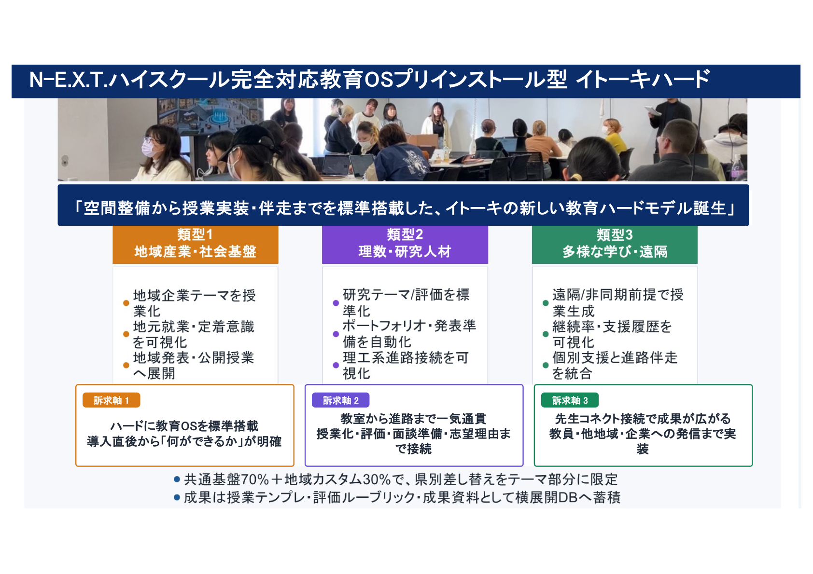
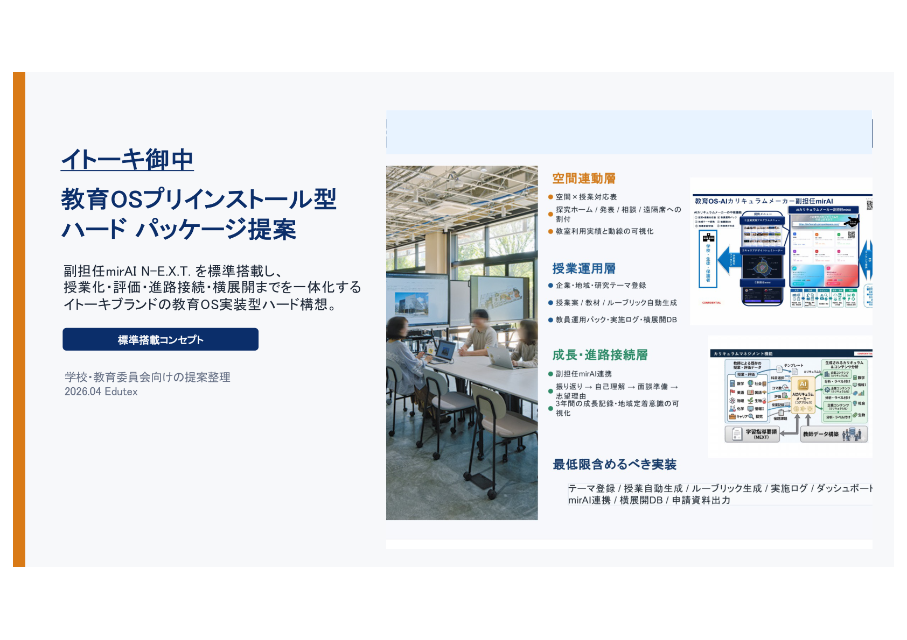
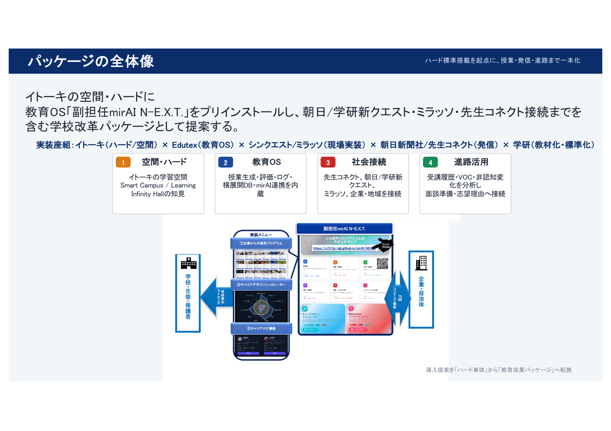
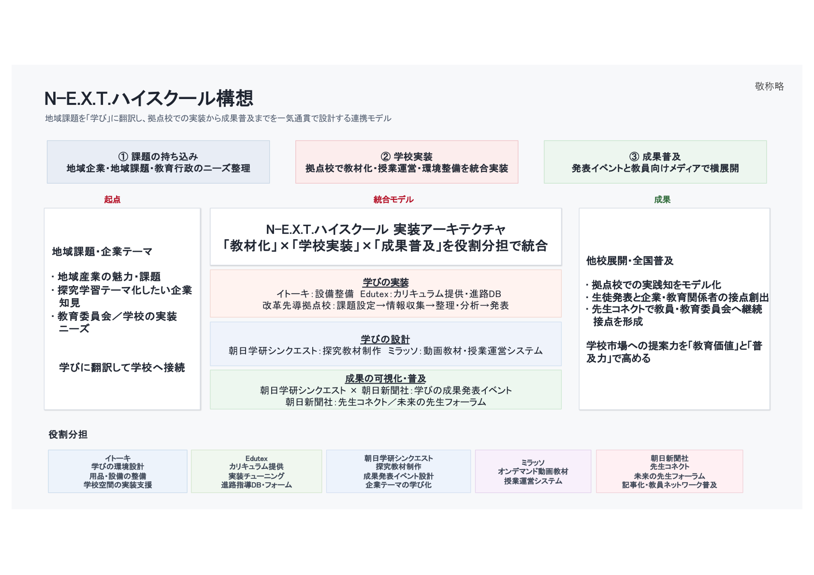

類型 1
地域・社会接続
地域・社会接続
- 地域産業・社会課題を授業テーマへ翻訳
- 朝日学研シンクエスト等の地域・社会接続型コンテンツを活用
- 企業・自治体との協働や発表の流れを授業化
- 成果を学校内外へ発信し、地域連携の価値を可視化
イトーキのハードを中核に、教育OS「副担任 mirAI N-E.X.T.」を標準装備。
さらに朝日学研シンクエスト等の魅力ある探究コンテンツと、先生コネクト連携による発信機能までを一体化した、学校のための実装型モデルです。

大型提示装置や学習空間と親和するハードを前面に据え、授業で使われる前提の実装環境を整えます。

副担任 mirAI N-E.X.T. を初期状態で搭載。授業設計、探究、評価、進路支援を一気通貫で扱えます。

朝日学研シンクエスト等の体験型・地域課題型・企業共創型コンテンツを、学校の学びへ取り込みやすくします。

先生コネクトと連携し、実践の発信・共有・他校展開まで視野に入れた学校価値の可視化を後押しします。
イトーキのハードを中心に据えることで、提示・共有・協働が自然に起きる教室をつくり、日常授業から探究へ無理なく接続できます。
副担任 mirAI N-E.X.T. が授業設計、評価、履歴管理を支え、教員の実践を属人化させずに学校全体へ展開しやすくします。
先生コネクトによる発信機能が加わることで、校内実践を対外発信へつなげ、教育委員会としての横展開や広報にも活かせます。